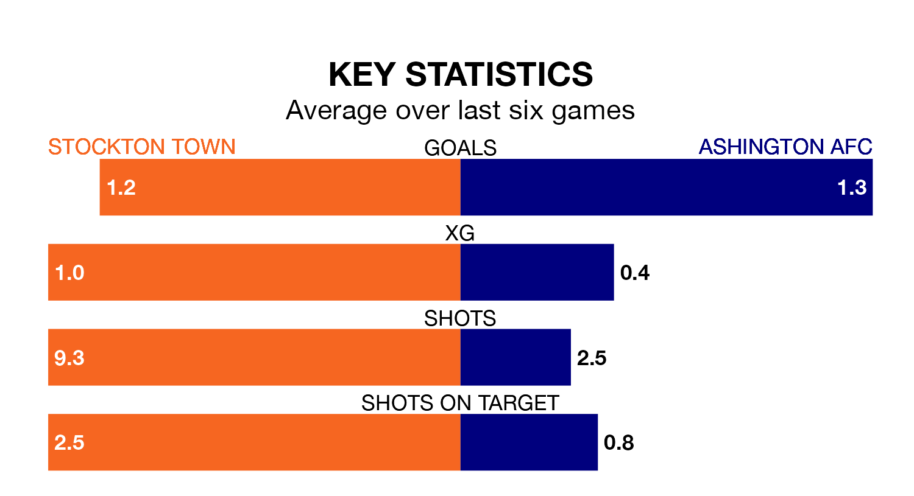

Saturday's match between Stockton Town and Ashington AFC promises to be one for the neutrals, as two of the Northern Premier League Division One East's most free-scoring sides go head-to-head.
Ahead of the game, Stockton and Ashington sit joint-top and third in the goal-scoring charts, with 55 and 45 goals respectively.
Stockton are top of the table after 26 games, of which they have won 16 and drawn seven, earning 55 points.
Ashington are 10 places behind Town in 11th, with 10 wins and four draws putting them on 34 points.
The hosts are in mixed form in the Northern Premier League Division One East, with two wins and four draws from their last six games.
With two wins and a draw over that period, the away team's form is worse – they have taken seven points from 18, compared to Stockton's 10.
Over the last two years, Stockton and Ashington have played each other twice. Stockton won both of them.
Their last meeting was on October 7, when Stockton won 4-1 away.
Stockton's last match was on February 17, a 1-0 win against North Ferriby.
Ashington lost 2-1 against Cleethorpes Town last time out, also on February 17.
Updated: 12:18 (UTC), 19/02/24